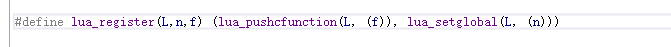
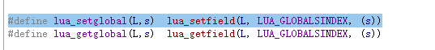
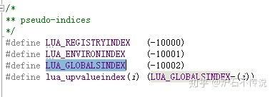
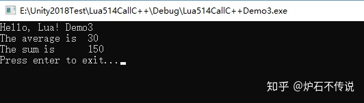
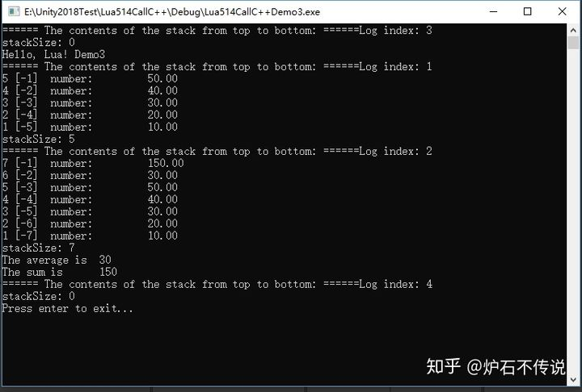

Home
上一篇文章中我们已经知道了，C++怎么调用Lua中的函数，接下来我们学习一下，Lua怎么调用C++中的函数。
这篇文章主要讲在Lua中执行average()函数，怎么调用到C++中的Average函数。然后把Average函数的执行结果再返回给Lua中。
一、直接上代码：
1、在Test.lua文件内添加如下代码：
print "Hello, Lua! Demo3"
avg, sum = average(10,20,30,40,50);
print("The average is ", avg)
print("The sum is ", sum)
2、在LuaTest.cpp文件内添加如下代码：
#include <stdio.h>
extern "C" {
#include "lua.h"
#include "lualib.h"
#include "lauxlib.h"
}
lua_State* L;
static int Average(lua_State *L)
{
//code3
int n = lua_gettop(L);
double sum = 0;
//code4
for (int i = 1; i <= n; ++i)
{
sum += lua_tonumber(L, i);
}
//code5
lua_pushnumber(L, sum / n);
lua_pushnumber(L, sum);
//code6
return 2;
}
int main(int argc, char *argv[])
{
L = lua_open();
luaL_openlibs(L);
//code1
lua_720wegister(L, "average", Average);
//code2
luaL_dofile(L, "Test.lua");
lua_close(L);
printf("Press enter to exit...");
getchar();
return 0;
}
二、代码分析，和上一篇C++调用Lua中重复的函数，这里就不做分析了，不明白的，可以去看上一篇。
code1、lua_720wegister注册函数把Lua函数和C++函数进行绑定。我们F12看一下lua_720wegister里面怎么定义的。lua_720wegister其实是一个宏定义
包括lua_pushcfunction和lua_setglobal操作。其实就是先用lua_pushcfunction把在c++中定义的函数压如栈中，然后lua_setglobal来设置栈顶的元素对应的值，这样就可以把lua函数和栈顶的c++函数建立引用关系。
lua_setglobal其实也是一个宏定义，就是一个特殊的lua_setfield操作。

code2、加载并执行lua脚本，此时lua中的函数average被执行，同时向栈中压如5个参数。参考栈的运行图Log index 1
code3、 lua_gettop是取出栈顶的索引值。此时栈顶的索引值大小就是站内元素的个数。
code4、使用循环变量站内所有的元素，通过lua_tonumber取出站内的值，然后进行相加操作。
code5、把要返回的值再压如栈。此时此时栈内7条数据，参考栈的运行图Log index 2
code6、告诉lua主程序，返回2个值。lua这是可以用参数接受这两个值
三、运行结果如下图
四、程序运行时栈内的变化情况如下图：
项目测试源码地址在第一篇文章末尾：炉石不传说：一、搭建C++调用Lua环境
如果你感觉这篇文章对你有用，请随手点赞或评论，你的点赞操作可以让更多想学习的人更容易找到这篇文章，谢谢！